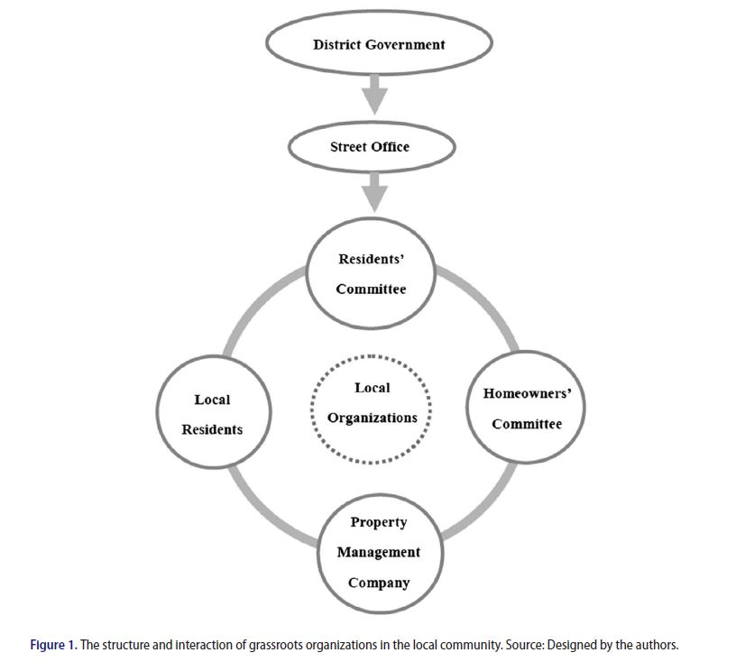
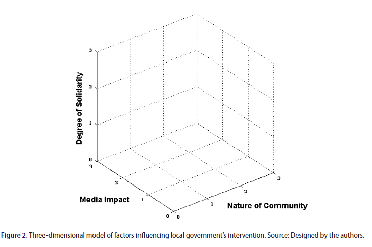
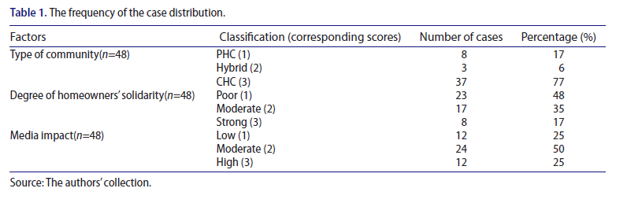
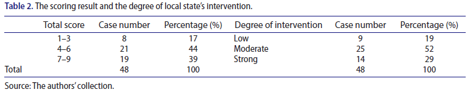
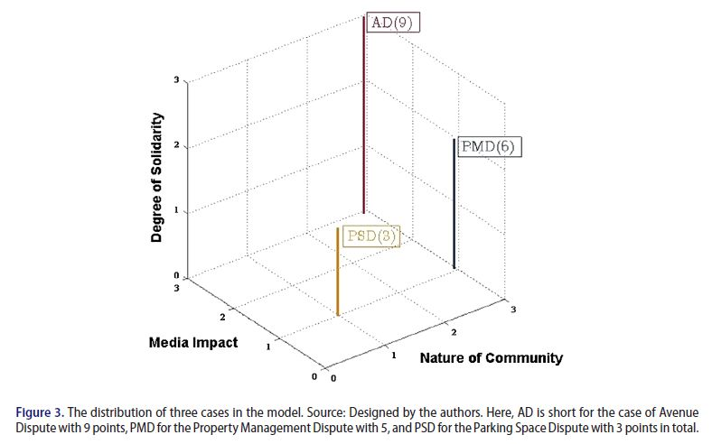

收录于合集
文献来源： Jieren Hu, Yue Tu and Tong Wu, “Selective Intervention in Dispute Resolution: Local Government and Community Governance in China,” Journal Contemporary China , Volume 27, 2018, pp.423-439.
作者简介： 胡洁人，复旦大学学士，香港中文大学博士，同济大学法学院副教授、复旦大学社会治理研究中心研究员，研究方向为法律社会学，纠纷化解和社会治理等。在SSCI和CSSCI期刊发表多篇二十余篇，出版专著两部。
有关中国地方政府行为的研究是当代中国研究的热点，政文观止Poliview（ID：zhengwenguanzhi）去年曾经推介过通过列举实验考察中国地方政府在何种条件下会对民众的诉求进行回应的研究（孟天广等 2017）。那么当居民社区自治存在纠纷时，地方政府是如何采取措施加以应对的呢？为什么它介入了这些纠纷但是却没有介入那些纠纷？是哪些因素影响了政府介入社区纠纷的可能性与程度？地方政府官员又是如何决定是否以及如何介入的呢？针对这一系列问题，同济大学的胡洁人副教授及其合作者发表在《当代中国》期刊上的一篇论文通过实地调查和个案研究的方法讨论了地方政府的应对策略。
作者在开篇即指出，地方政府面临着国家干预和社区自治相抵牾的困境。在“政党—国家”体制下，居民自治与社会组织在社区治理中一方面扮演着连接沟通公民和政府的媒介作用，另一方面也促使地方政府官更好地履行社会服务职责并改进社会政策，其重要性不言而喻。因此，过度增长的干预行为违背了中央长期推进的社区自治建设的努力并削弱了政府的可信度及其合法性，但是如果放任不管则会增加社会不稳定的风险和地方性群体性事件的频率。在这种情况下，为了既保证社区自治又维护社会稳定，选择性干预就成了地方政府针对社会自治时所采取的一种手段。
在作者看来，随着改革开放的深入，传统的单位制裂解，社区制逐步建立起来。而在20世纪90年代推进的城镇居民住房制度改革使得社会转型进程进一步加快，城市居民生活区日渐分化，由此形成如图1所示的社区模式。在这一模式中，在区政府和下设的街道办事处以下，居民委员会（Residents’ Committee，RC）、业主委员会（Homeowners’ Committee, HC）以及物业公司（Property Management Company）共同构成了管理社区事务的“三驾马车”。因此，城市是检视地方政府选择性干预的重要场所。

接下来，作者分析了影响地方政府干预的因素，指出社区的种类，业主委员会之间的团结程度以及媒体的影响明显地影响到地方政府干预纠纷的可能性与程度。为此，作者分别建构了三维模型来衡量这三个因素对政府干预的可能性，如图2所示。作者将社区的种类划分为三类并依次赋值，分别是商品房小区（赋值为3）和老旧售后公房小区（赋值为1）以及居于二者之间的混合小区（赋值为2）。在业主的团结程度方面，收入较低的业主被赋值为1，反之较为富裕的业主被赋值为3，而介于两者之间的则被赋值为2。在媒体曝光程度这方面，作者借助中国大陆常用的搜索引擎百度和搜狐进行检索，将报道频次在100次以内的标记为1，100-500次的标记为2，超过500次的事件则被标记为3。

在研究方法上，作者首先从报纸、杂志以及可获得的政府文件中搜集了2012-2016年发生在城市社区中的108件群体性纠纷，并且根据社区性质、业主团结的水平以及媒体曝光这三类影响因素选取了其中的48件进行统计分类（如表1所示）。

表2显示了不同种类的群体性纠纷事件的分布与政府干预的不同程度。值得注意的是，在39%得分为7-9的事件中，只有其中29%的事件受到了政府的强烈干预；而44%得分在3和6之间中的52%事件受到了政府中度的干预；剩余17%得分在1-3的事件中有19%的数量受到了政府的低度干预。但是除此之外，还有超过1/4得分为8的事件只受到了政府的中度的干预，但是没有得分很低却受到了强力干预的事件，这也符合常识。

基于此，作者在2015-2016年间分别前往北京、上海和广州三地进行实地调查，对发生过群体性纠纷事件的当地居民、政府官员进行深度访谈，然后将这些案例提炼后投射到建构的三维坐标中，如图3所示：

其中，作者选取的北京案例是金科和纳帕溪谷两个小区业主之间产生的纠纷。作者通过实地走访后，通过上述建构的坐标系来分析这一事件，进而对其在三个不同维度上均赋值为3，得分总计是9分。
作者在广州选取的案例是雍景苑业主与康景物业之间的纠纷。雍景苑的业主主要是白领，他们对开发商聘请的康景物业服务严重不满，但是康景物业坚持要履职到合同到期，由此引发双方冲突。雍景苑业主经过投票决定撤换，康景物业则将雍景苑业主委员会告上法庭。在业主委员会和物业公司关系持续紧张下，居委会扮演了重要的调停角色，居委会的书记联系到了天河区住房管理局和五山街道的相关负责人，希望他们出面主持一场新的投票来决定康景物业的去留。最终，超过一半的居民投票支持选择盛孚物业来替换康景物业。最终在居委会、街道和区住房管理局三方的协调和配合下，康景物业搬离，持续三年的纠纷终于得以解决。在这一纠纷中，业主因为缺乏业主委员会和居委会的协调不仅影响了集体行动中的动员能力，也放大了与康景物业公司之间的冲突，但是业主较少运用媒体平台进行曝光则降低了政府介入纠纷的可能性与程度。
作者选区的上海案例是发生在2014年红园小区超过100名业主为争夺停车位相互冲突的事件。由于红园小区本身属于老旧售后公房小区，没有单独的停车位，无法满足日益增多的私家车，停车难成为令该小区居民头疼的难题。超过10家不满没有停车空间的住户用车挡在了邻居家门口，引起了被挡住户的反击。冲突使得业主委员会介入，一位在居委会中任职的退休法官成功地劝退了阻碍他人同行的车主。于此同时，居委会也积极与物业公司沟通，在街道办的帮助下使无车位的车主可以将车停在临近住处的停车场以调停争端。这一案例在每个维度的得分均为1分，即便是在当地社区里发生了群体性事件，政府干预的可能性也很低。因为冲突发生在业主间，他们也没有借助移动设备动员或者社交媒体曝光。居民可以通过政府下的居民委员会和街道办来解决争端。
从上述三个案例分别代表了地方政府干预程度的强、中与弱三种程度，可以显示，住房小区越高档，业主之间的抱团程度越强，媒体发挥的作用越大将会导致政府的强力干预。
进一步，作者以上海市政府举例指出，其在多方面推进了社会治理创新手段，尽管强化了国家权力对基层社会的管控和对冲突的预防，但同时也促使自治性质的组织——业主委员会也对集体行动相当敏感。因此，对中国地方政府官员来说，是干预群体纠纷还是不介入取决于上级部门的要求以及前述的三个影响因素。因此，作者认为在面临前述的两难情况下，地方政府官员的理性选择便是针对事件影响因素的作用程度进行选择性干预。
但是有没有在三个维度上得分很高却基本没有政府介入的事件呢？作者找到了2012年北京花卉园业主抗议开发商违法侵占绿地与停车空间建设酒店这一案例。在这一事件中，小区业主一方面通过在报纸与新闻上曝光这一违法行为，一方面团结起来互相照应。与此同时，他们在居委会主任的领导下聘请律师通过合法途径起诉开发商。经过一年半的努力，花卉园的业主打赢了官司，最终成功地阻止了开发商的侵权行为。在这一纠纷中，有200名业主参与其中。他们所受教育程度较高，团结程度强，但是通过合法的方式来解决争端。因此，只有在居民通过独立决策与正确维权的条件下，社区自治才能真正得以实现。
作者最后总结道，在层次层复杂的制度与存在相互冲突的利益中，社区的种类，业主间团结的程度以及媒体曝光的作用显著地影响力地方政府介入、解决群体纠纷的可能性与模式。当然，地方政府选择性介入与主政官员在推动社取自治与维护社会稳定求平衡也密切相关。在这一过程中，国家与社会的关系相互塑造，也一直在演变。
编后记：本文经过扎实的实地调查和深入的访谈，是一篇典型的以定性方法（实地调查+案例研究）从事研究的政治科学论文，其考察了当代国家—社会关系研究领域中的核心关切，具有现实意义。但是这篇文章只针对京沪广特大型城市的样本做了深入剖析，却没有针对除却特大型城市以外的中小型城市中的地方政府在面临居民社区自治中出现纠纷时的应对措施进行研究，换言之，其结论的稳健性仍然有待于后续通过大样本统计来做进一步的检验。
感谢胡洁人教授拨冗审定！
编译：杨端程
编辑：吴温泉
审读：秦汉元 贺竞超


“广告点一点，也是支持学术公益 ”
”
政文观止
微信扫一扫赞赏作者 __赞赏
已喜欢，对作者说句悄悄话
取消 __
发送给作者
发送
最多40字，当前共字
上一页 1/3 下一页
长按二维码向我转账
受苹果公司新规定影响，微信 iOS 版的赞赏功能被关闭，可通过二维码转账支持公众号。